UD6: MULTICAPA - VISTAS Y CONTROLADORES, EVENTOS E INTERACTIVIDAD¶
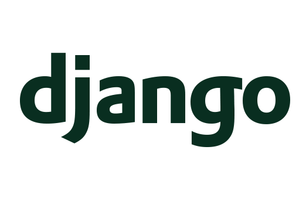
INTRODUCCIÓN¶
En esta unidad vamos a introducir la creación de formularios con Django para poder manipular los datos de nuestra aplicación web. Por el camino iremos descubriendo nuevos tipos de vistas (CBV) que automatizan muchas de las operaciones que hemos de realizar. También descubriremos cómo utilizar apps (o módulos) desarrolladas por terceros para personalizar más convenientemente nuestros formularios y añadir interactividad desde el servidor.
Todo ello lo articularemos mediante el ejemplo guiado del portfolio.
En cuanto a las actividades, introduciremos el uso de formularios al proyecto iniciado en la unidad anterior, entre otros aspectos.
EVALUACIÓN¶
El presente documento, junto con sus correspondiente boletín de actividades (publicado adicionalmente), cubren los siguientes criterios de evaluación:
| RESULTADOS DE APRENDIZAJE | CRITERIOS DE EVALUACIÓN |
|---|---|
| RA5. Desarrolla aplicaciones Web identificando y aplicando mecanismos para separar el código de presentación de la lógica de negocio. | c) Se han utilizado objetos y controles en el servidor para generar el aspecto visual de la aplicación web en el cliente. d) Se han utilizado formularios generados de forma dinámica para responder a los eventos de la aplicación Web. h) Se ha probado y documentado el código. |
| RA6. Desarrolla aplicaciones web de acceso a almacenes de datos, aplicando medidas para mantener la seguridad y la integridad de la información | f) Se han creado aplicaciones web que permitan la actualización y la eliminación de información disponible en una base de datos. |
| RA8. Genera páginas web dinámicas analizando y utilizando tecnologías y frameworks del servidor web que añadan código al lenguaje de marcas. | a) Se han identificado las diferencias entre la ejecución de código en el servidor y en el cliente web. b) Se han reconocido las ventajas de unir ambas tecnologías en el proceso de desarrollo de programas. c) Se han identificado las tecnologías y frameworks relacionadas con la generación por parte del servidor de páginas web con guiones embebidos. d) Se han utilizado estas tecnologías y frameworks para generar páginas web que incluyan interacción con el usuario. e) Se han utilizado estas tecnologías y frameworks, para generar páginas web que incluyan verificación de formularios. f) Se han utilizado estas tecnologías y frameworks para generar páginas web que incluyan modificación dinámica de su contenido y su estructura. g) Se han aplicado estas tecnologías y frameworks en la programación de aplicaciones web. |
Vistas de edición genéricas¶
En la unidad anterior vimos que existen dos tipos de vistas: FBV y CBV. En esta unidad vamos a profundizar más en las segundas.
CreateView¶
Esta vista crea un formulario por nosotros para la creación de un objeto, y se encarga también de todas las validaciones y sus correspondientes mensajes.
Vamos a crear una vista de este tipo para crear nuevos proyectos en en portfolio. En views.py, insertamos el siguiente código, para la creación de nuevos proyectos (importamos antes la clase CreateView):
class ProyectoCreateView(CreateView):
model = Proyecto
fields = ['titulo', 'descripcion', 'fecha_creacion', 'year', 'categorias', 'imagen']
{% extends 'portfolio/base.html' %}
{% block content %}
<div class="container">
<h2>Creación de un nuevo proyecto</h2>
<form method="post" enctype="multipart/form-data">{% csrf_token %}
{{ form.as_p }}
<input type="submit" value="Guardar">
</form>
</div>
{% endblock %}
Por último, creamos una nueva URL:
path('proyecto_create/', views.ProyectoCreateView.as_view(), name='proyecto_create')
Vamos al navegador, e introducimos la URL según la estructura que hemos configurado y, ¡obtenemos el formulario con todos sus campos!
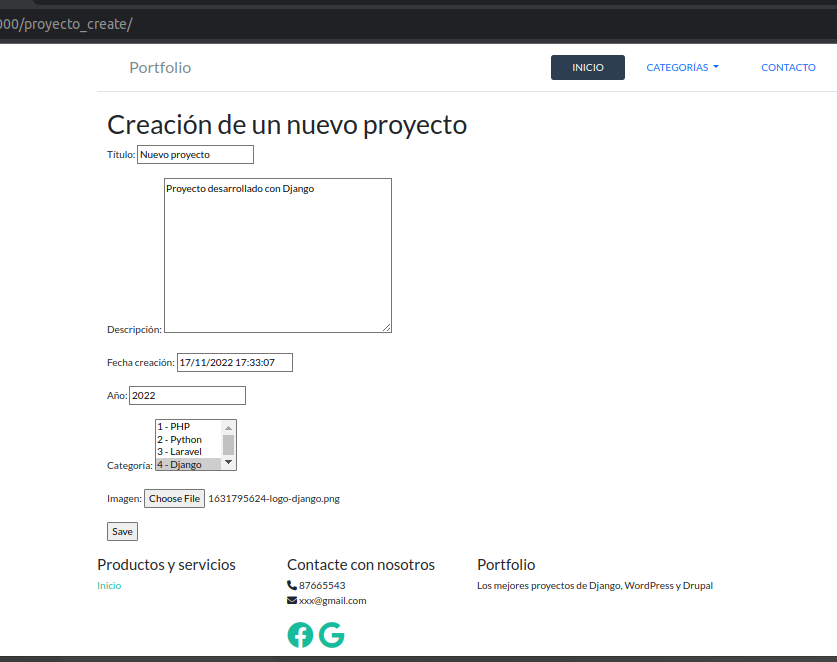
Emocionante, pero ¿qué ha pasado tras las cortinas para que con tan pocas líneas hayamos obtenido un formulario funcional? Ha ocurrido lo siguiente:
- CreateView ha derivado un formulario basándose en el modelo Proyecto, tomando los campos que le hemos pasado en la lista fields.
- Hemos utilizado este formulario en el template "proyecto_form.html". La vista se lo ha pasado automáticamente por contexto, sin que nosotros hayamos configurado nada.
- ¿Cómo sabe Django qué plantilla ha de utilizar para la nueva vista? Lo sabe porque hemos dejado la plantilla bajo el directorio "portfolioapp" en templates, con el mismo nombre que la app que contiene la vista. Además, hemos seguido la nomenclatura [nombre modelo]_form.html, es decir proyecto_form.html, con lo cual Django lo ha sabido encontrar.
Vamos a crear nuestro primer proyecto. Pulsamos en Guardar, y obtenemos lo siguiente:
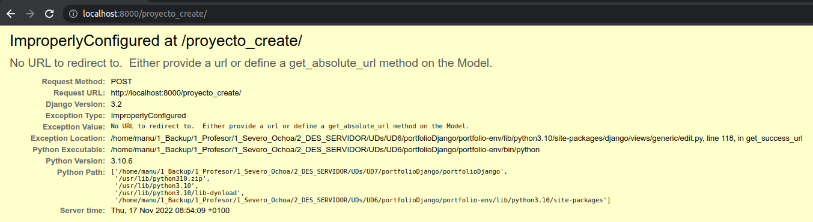
Django nos avisa que no hemos configurado la vista para redireccionar la navegación tras crear un proyecto satisfactoriamente. A pesar del error, realmente sí se ha creado el proyecto, lo podemos ver en home:
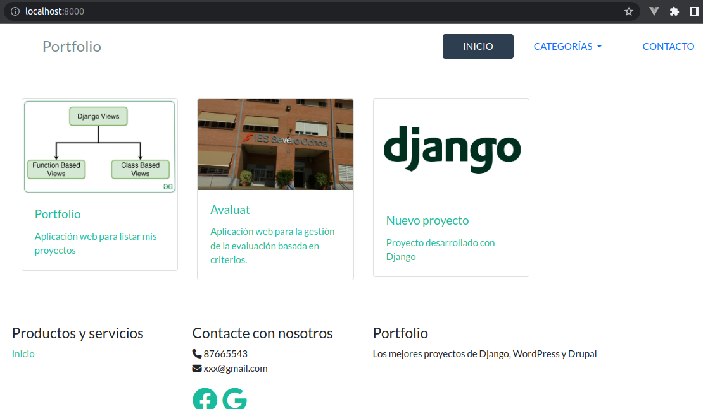
Por tanto, vamos a modificar la vista de la siguiente forma, para definir un atributo llamado success_url:
from django.urls import reverse_lazy
...
class ProyectoCreateView(CreateView):
model = Proyecto
fields = ['titulo', 'descripcion', 'fecha_creacion', 'year', 'categorias', 'imagen']
success_url = reverse_lazy('home')
El nombre 'home' viene del nombre que le dimos a la URL de la vista HomeView, creada en la unidad anterior.
Si creamos ahora un nuevo proyecto, al salvar los cambios nos redireccionará a la página de inicio.
UpdateView¶
Vamos en este apartado a implementar la actualización del proyecto. Para ello, utilizamos la vista genérica UpdateView (la importamos previamente), y añadimos una vista del siguiente modo:
class ProyectoUpdateView(UpdateView):
model = Proyecto
fields = ['titulo', 'descripcion', 'fecha_creacion', 'year', 'categorias', 'imagen']
success_url = reverse_lazy('home')
La URL será la siguiente:
path('proyecto_update/<int:pk>/', views.ProyectoUpdateView.as_view(), name='proyecto_update'),
Probamos la URL con un ID de prueba y vemos que recupera automáticamente los datos del proyecto con ese ID.
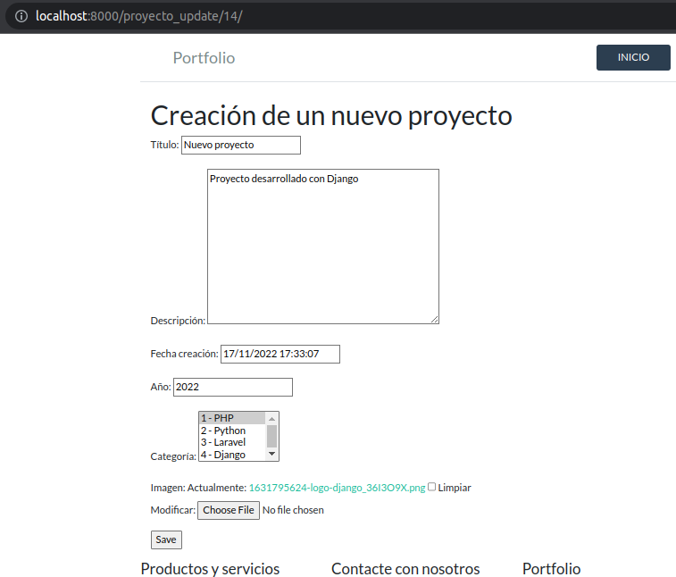
Hay que notar que no hemos especificado ninguna plantilla, ha seguido tomando la plantilla proyecto_form.php que ya se había utilizado para la CreateView.
Hay una cosa en el formulario que no nos acaba de gustar, y es el texto del botón. Vamos a modificar la plantilla para que, en función de que estemos en modo creación o edición, muestre "Crear" o "Actualizar", para que sea más orientativo para el usuario. Esto lo podemos conseguir comprobando si existe una variable "object" en el contexto de la plantilla, pasado por UpdateView. Así, modificaríamos el código de la plantilla ligeramente para que el botón que dispara el formulario quede:
<input type="submit" value="{{object|yesno:'Actualizar,Crear'}}">
De la misma forma, modificamos el elemento h2:
<h2>{{object|yesno:'Actualizar proyecto,Creación de un nuevo proyecto'}}</h2>
Hemos utilizado el operador ternario yesno en la plantilla.
Vamos a modificar la pantalla de inicio para que, al pulsar en uno de los proyectos, vaya al formulario de edición. En la siguiente unidad configuraremos la aplicación para que solo se pueda editar un proyecto si el usuario tiene privilegios para ello.
Lo único que hemos de hacer es cambiar ligeramente la línea 12 de home.html para cambiar el nombre de la URL a la que apunta el enlace de cada proyecto:
<a href="{% url 'proyecto_update' pk=proyecto.id %}" class="p-5">
Probamos que ahora accedemos al formulario de edición tras pulsar sobre uno de los proyectos.
DeleteView¶
Ahora vamos a implementar una vista que nos permita borrar un proyecto determinado. Para ello vamos a utilizar la vista genérica DeleteView. La operación se va a realizar en dos pasos:
1. En el formulario de edición del proyecto tendremos un botón Eliminar, solo habilitado si el formulario está en modo edición, no creación.
2. Navegación a una pantalla de confirmación, donde confirmaremos que realmente queremos borrar el registro.
Vamos a ello. Configuramos la vista de eliminación de la siguiente forma:
class ProyectoDeleteView(DeleteView):
model = Proyecto
success_url = reverse_lazy('home')
No es necesario especificar el atributo template_name, ya que el nombre de la plantilla sigue la nomenclatura por defecto (proyecto_confirm_delete.html, definida más abajo).
Y su correspondiente URL:
path('proyecto_delete/<int:pk>/', views.ProyectoDeleteView.as_view(), name='proyecto_delete'),
La plantilla, con nombre "proyecto_confirm_delete.html", será la siguiente:
{% extends 'portfolio/base.html' %}
{% block content %}
<div class="container">
<h2>Eliminar un proyecto</h2>
<form method="post">{% csrf_token %}
<p>¿Está seguro que quiere eliminar este proyecto "{{ object }}"?</p>
{{ form }}
<input type="submit" value="Confirmar" class="btn btn-danger">
</form>
</div>
{% endblock %}
Queda por crear el botón Eliminar en el formulario del proyecto, y solo se habilitará cuando esté en modo edición (el proyecto ya ha sido creado). ¿Cómo sabemos si el formulario está en modo creación o edición? Muy fácil: la vista UpdateView pasa a la plantilla, como parte del contexto, un objeto "object" con todos los atributos del proyecto. Así, solo hemos de condicionar la visualización del botón Eliminar cuando object no esté vacío. De esta forma, añadimos lo siguiente a proyecto_form.html, tras el elemento form:
{% if object %}
<a class="btn btn-danger" href="{% url 'proyecto_delete' object.id %}"> Eliminar </a>
{% endif %}
Ya tenemos el botón Eliminar en el formulario de edición. Si pulsamos, nos llevará a la siguiente página:
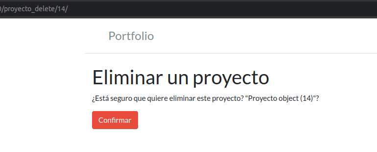
No nos aparece correctamente el nombre del proyecto, porque no hemos configurado su representación textual mediante la función str en la configuración del modelo Proyecto.
ACTIVIDAD: configura str en Proyecto, como hiciste en las actividades de la unidad anterior.
Tras confirmar la eliminación, navegamos automáticamente a la página de inicio y comprobamos que se ha eliminado el proyecto.
Redirecciones¶
Ahora tenemos una forma de crear, actualizar y eliminar proyectos, pero cada vez que realizamos una acción, nos redirecciona a la pantalla de bienvenida. Queremos cambiar esto de forma que, cuando realizamos una operación, se redireccione automáticamente a una URL que tenga sentido. Podríamos diseñar las siguientes acciones para que la navegación sea lo más lógica posible:
- Ir a pantalla de edición tras la creación de un proyecto.
- Ir a la página de bienvenida tras la edición exitosa de un proyecto.
- Ir a la página de bienvenida tras la eliminación de un proyecto.
Las dos últimas las tenemos resueltas, falta por solucionar la primera.
Tenemos diferentes formas de hacer lo mismo:
- Mediante el método get_success_url en la vista, con el que podemos construir dinámicamente la URL a la que redireccionar, en función de cada \"id\" de proyecto.
- Mediante el método get_absolute_url en el modelo, que se utilizaría para redireccionar tras crear o actualizar un objeto de ese modelo.
Como solo queremos modificar el comportamiento de la creación, sustituimos la vista ProyectoCreateView por la siguiente versión:
class ProyectoCreateView(CreateView):
model = Proyecto
fields = ['titulo', 'descripcion', 'fecha_creacion', 'year', 'categorias', 'imagen']
def get_success_url(self):
object = self.object
return reverse_lazy('proyecto_update', kwargs={'pk': object.id})
Cabe hacer notar que ya disponemos del objeto creado (en la BBDD) mediante self.object para cuando se ejecuta la función get_success_url. Esto nos permite una gran variedad de posibilidades, ya que podríamos redireccionar la navegación de multitud de formas (a diferentes vistas, con diferentes parámetros) dependiendo de las características del objeto creado, o de otros factores. Podríamos, por ejemplo, redireccionar la navegación a la página de inicio y pasar un parámetro para filtrar todos los proyectos del mismo año que el que acabamos de crear. Lo vamos a dejar así por el momento.
Mixins¶
Los mixins son una forma de reutilización de código en Django, de forma que podemos definir una vista que herede de otra vista genérica, y aportarle funcionalidades extra mediante mixins.
Messages framework¶
Vamos a utilizar como ejemplo el mixin SuccessMessageMixin, que nos va a permitir mostrar mensajes de confirmación tras realizar cualquier acción. La documentación sobre esto la puedes encontrar en este enlace.
En primer lugar, la documentación nos dice que, por defecto, la configuración para esta funcionalidad ya está preestablecida en settings.py. Vamos a la parte que nos interesa, que es la de la de agregar mensajes en CBV. En views.py importamos la clase SuccessMessageMixin como nos indica en el ejemplo del enlace, y modificamos la vista ProyectoCreateView para que quede del siguiente modo:
from django.contrib.messages.views import SuccessMessageMixin
...
class ProyectoCreateView(SuccessMessageMixin, CreateView):
model = Proyecto
fields = ['titulo', 'descripcion', 'fecha_creacion', 'year', 'categorias', 'imagen']
success_message = "Proyecto creado exitosamente"
def get_success_url(self):
object = self.object
return reverse_lazy('proyecto_update', kwargs={'pk': object.id})
NOTA: es importante situar los mixins a la izquierda de la vista base. Los atributos y métodos se resuelven de izquierda a derecha. En caso de que las clases de las que se hereda tengan un mismo nombre de un atributo y/o método, el de más a la izquierda se tomaría antes que el de la clase de más a la derecha, según la lista especificada. Es por ello que la clase base se sitúa más a la derecha.
Está todo listo ya. Solo nos queda poder mostrar por pantalla los mensajes generados, como se muestra en este apartado de la documentación. Para ello, podemos reservar un espacio en la plantilla base de la aplicación, que contenga el siguiente bloque (antes del bloque "content"):
{% block messages %}
{% if messages %}
{% for message in messages %}
<div {% if message.tags %} class="alert alert-{{ message.tags }} alert-dismissible fade show" {%endif %} role="alert">
{{ message }}
<button type="button" class="btn-close" data-bs-dismiss="alert" aria-label="Close"></button>
</div>
{% endfor %}
{% endif %}
{% endblock messages %}
Al crear un nuevo proyecto, se nos mostrará el siguiente mensaje:
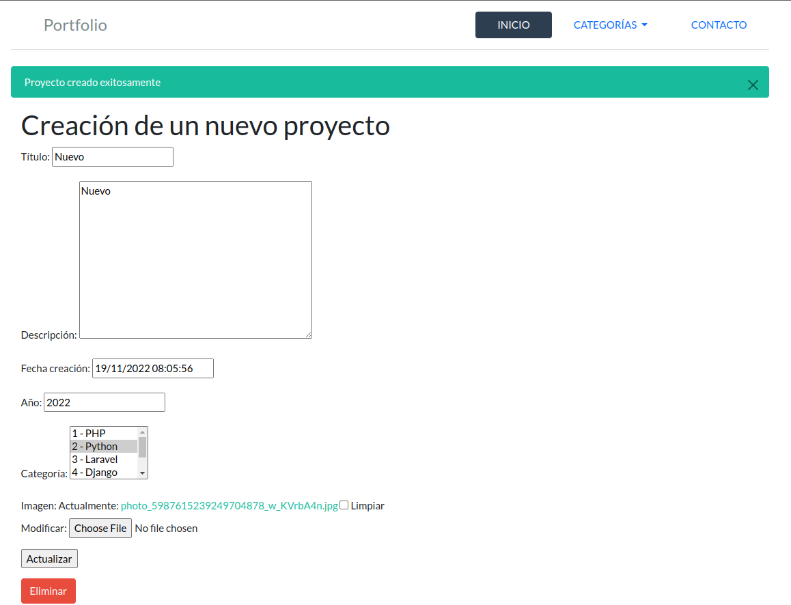
Es importante notar que los mensajes se mostrarán al finalizar la acción que hemos realizado, pero cuando ya hayamos cargado la siguiente página. Por tanto, la navegación ha de realizarse de forma que tenga sentido para el usuario el mensaje obtenido, y la página actual en la que nos encontramos.
ACTIVIDAD: Añade esta funcionalidad a la vista ProyectoUpdateView.
En estos momentos el mensaje mostrado es estático, siempre se mostraría el mismo. Pero podríamos hacer que se mostrase un mensaje diferente, por ejemplo, en función de alguno de los atributos del proyecto (su nombre, su representación textual, etc). Para poder hacer esto, basta con sobreescribir el método get_success_message de la clase (CreateView o UpdateView). Un ejemplo puede ser el siguiente, que hace que se muestre un mensaje con un texto fijo, combinado con la representación textual del proyecto:
def get_success_message(self, cleaned_data):
return "Proyecto '{}' actualizado exitosamente".format(str(self.object))
En este enlace tienes una explicación más detallada de qué hace format.
Como apunte final, vamos a hacer un pequeño cambio en la configuración de settings.py. Simplemente añade esta importación:
from django.contrib.messages import constants as messages
MESSAGE_TAGS = {messages.ERROR: 'danger'}
Mixins personalizados¶
La posibilidad de utilizar mixins supone un reaprovechamiento importantísimo de código. Podemos crear pequeñas cápsulas de código identificadas con un nombre, e ir dotando a nuestras clases de características adicionales. Al leer la línea inicial de una clase (sus mixins y clase base de la que hereda) deberíamos poder saber cuál va a ser el propósito de la clase.
En este apartado vamos a crear un mixin nuevo. Para ello, primero creamos un fichero mixins.py en la app portfolioapp:
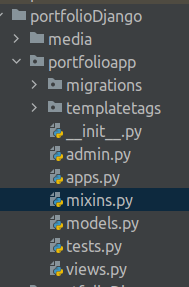
Crear un mixin es crear una clase nueva. Para crear una clase desde cero, heredamos de la clase "object", aunque podemos partir de otras clases.
Observando nuestras vistas, ¿qué podríamos llevarnos a un mixin? quizás las diferentes opciones son argumentables, pero con el código que hemos generado hasta el momento, se repiten algunos atributos de las clases ProyectoCreateView y ProyectoUpdateView, y la herencia de SuccessMessageMixin. Vamos por tanto a crear un mixin que agrupe todo esto, y además vamos a redireccionar las dos acciones (creación y actualización) a la pantalla de actualización. En mixins.py:
from django.contrib.messages.views import SuccessMessageMixin
from .models import Proyecto
class ProyectoMixin(SuccessMessageMixin):
model = Proyecto
fields = ['titulo', 'descripcion', 'fecha_creacion', 'year', 'categorias', 'imagen']
def get_success_url(self):
object = self.object
return reverse_lazy('proyecto_update', kwargs={'pk': object.id})
En views.py modificamos las vistas para que queden del modo:
from .mixins import ProyectoMixin
...
class ProyectoCreateView(ProyectoMixin, CreateView):
success_message = "Proyecto creado exitosamente"
class ProyectoUpdateView(ProyectoMixin, UpdateView):
success_message = "Proyecto actualizado exitosamente"
Si probamos la aplicación, debería funcionar igual que antes, con las ventajas de que nuestro código es mucho más modular, y si tuviésemos que cambiar algo del comportamiento común a estas dos vistas, solo tendríamos que modificarlo en un único lugar.
NOTA: Un mixin debería representar una agrupación de funcionalidades que pudiesen ser reutilizadas en muchas vistas, incluso de diferentes apps. En este caso, estamos llevando al mixin el atributo model junto con otros atributos y métodos que lo particularizan para vistas basadas en el modelo Proyecto. Por lo tanto, no vamos a poder utilizar este mixin en otras vistas de otros modelos. Podríamos acabar incluso llevándonos toda la lógica de las dos vistas al mixin, pero se difuminaría el propósito del mixin, y las vistas se reducirían a un mínimo que carecería de sentido. La práctica nos dirá cuándo nos llevamos determinados comportamientos a un mixin, y cuándo los dejamos en una determinada vista.
Personalización de vistas genéricas¶
Hemos visto ya algún ejemplo de cómo modificar el comportamiento de una vista, en concreto el método get_success_url (de CreateView y UpdateView). En este apartado vamos a ir un poco más allá y vamos a averiguar qué opciones tenemos disponibles para personalizar, y hacer algunos ejemplos.
Tomamos como ejemplo la vista CreateView. Lo primero que nos hemos de preguntar es qué métodos podemos personalizar. Vamos a la documentación de esta vista, y nos da una lista de sus características:
Atributos:
Entre los atributos, la documentación especifica uno llamado "object". Si el objeto aún no ha sido creado, este atributo tendrá el valor None, y si el objeto ya ha sido creado contendrá una copia. Esto lo hemos utilizado en el método get_success_url, para pasarle a la vista "proyecto_update" el id del objeto que se ha creado al pulsar el botón "Crear".
Ancestros:
Esta es la lista de ancestros:
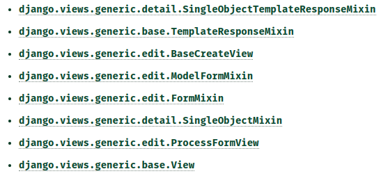
NOTA: En este apartado se especifican las siglas MRO (Method Resolution Order), que es el algoritmo que utiliza Python para la resolución de un método/atributo en la jerarquía de clases, cuando se utiliza la herencia múltiple. Este punto es el que se ha discutido en el apartado de mixins.
Si consultamos cada una de estas clases, podemos ver los atributos y métodos de cada una de ellas. Por ejemplo:
- Mediante SingleObjectTemplateResponseMixin podemos recuperar el
template para una vista que opere sobre un solo objeto. Entre otros,
podemos ver que este mixin tiene un método get_template_names, que
establece una lista de plantillas candidatas a ser utilizadas. Nos
dice que se busca una plantilla con la forma
/ .html. Esta estructura es coherente con el nombre de la plantilla que utilizábamos ProyectoCreateView, llamada proyecto_form.html, dentro de la app portfolioapp. Por tanto hemos resuelto el misterio de cómo era posible que Django encontrase la plantilla de nuestro proyecto automáticamente. Podríamos, por ejemplo, sobreescribir este método para obtener el nombre de una plantilla para nuestra vista, según otro tipo de lógica. - En ModelFormMixin podemos ver que están casi todos los atributos que hemos utilizado hasta ahora, y el método get_success_url que ya habíamos sobreescrito. Tenemos además otros métodos interesantes, como form_valid (que nos permitirá realizar determinadas acciones una vez se ha verificado que los campos del formulario son válidos, antes de crear el objeto y redireccionar).
En los siguientes subapartados vamos a realizar algunas personalizaciones a algunas de las vistas que venimos utilizando.
form_valid¶
Imaginemos que queremos enviar una notificación a los suscriptores de nuestro sitio web (si tuviésemos la capacidad de llevar su alta y gestión). Queremos notificarles que hemos publicado un nuevo proyecto, no queremos que se pierdan nada. Esto es de lo más común en cualquier tipo de aplicación, no podemos pretender que los usuarios estén constantemente refrescando una página web para saber si hay novedades, hemos de enviar notificaciones (normalmente en forma de e-mail).
Por ello, en cualquier proyecto de una cierta envergadura, vamos a disponer de una parte de la aplicación que se encargue de registrar todos aquellos eventos susceptibles de ser notificados, así como la lógica para encontrar los destinatarios, conformar los mensajes, y enviar los e-mails (ya directamente, o a través de un servicio como mailchimp).
Bien, el primer paso es poder registrar el evento de creación de un proyecto nuevo. Pero ¿dónde lo registramos? Lo podemos hacer en una tabla nueva. Esta tabla... ¿la creamos en la app "portfolioapp" que tenemos actualmente en el proyecto? Pues no es lo más adecuado: vamos a empezar a desarrollar lógica para una nueva funcionalidad sobre notificaciones. Tiene muchísimo más sentido crear una app nueva en el proyecto, que registre la base de todo esto, y además lo podamos reutilizar en futuros proyectos.
Por tanto, creamos una nueva app llamada "notificaciones" (mediante el comando startapp), la añadimos a INSTALLED_APPS de settings.py, y dentro de su fichero models.py definimos un nuevo modelo. Una versión muy muy muy simplificada sería:
class NotificaProyecto(models.Model):
proyecto = models.ForeignKey(Proyecto, on_delete=models.PROTECT)
fecha = models.DateTimeField(default=now)
notificado = models.BooleanField(default=False)
NOTA: En un proyecto de más envergadura, si quisiésemos notificar eventos realizados sobre diferentes tipos de modelos, ¿deberíamos tener un modelo NotificaXXX por cada tipo de objeto a modificar? El problema es que la clave foránea "proyecto" va enlazada con el modelo Proyecto, pero no puede ir enlazada con ningún otro modelo. Nos ahorraría mucho esfuerzo el poder enlazar ese atributo a cualquier modelo sobre el que quisiésemos notificar algún evento. ¿Cómo se podría hacer en Django? Muy fácil: mediante lo que se llama el contenttype framework de Django, mediante el que podemos establecer claves foráneas genéricas, a cualquier otro modelo. Un mismo modelo nos puede servir de detalle para varios muchos otros.
Tras crear el modelo, hacemos las migraciones y migramos, y configuramos el administrador para este nuevo modelo.
Nuestro objetivo es que cada vez que se cree un proyecto nuevo se cree, a la vez, un nuevo objeto para la clase NotificaProyecto.
Bien, vamos a sobreescribir el método form_valid de la vista ProyectoCreateView para realizar dos acciones:
- Comprobar que la fecha de creación del proyecto no es anterior al momento actual (se trata solo de un ejercicio ilustrativo).
- Creación tanto el proyecto como su correspondiente notificación.
Primero importamos lo siguiente en views.py:
from django.contrib import messages
from django.db import transaction
from django.utils import timezone
Todo esto es tan fácil como añadir el siguiente método a la clase ProyectoCreateView:
def form_valid(self, form):
if form.instance.fecha_creacion < timezone.now():
messages.error(self.request, "La fecha/hora del proyecto no puede ser anterior a la actual.")
return super(ProyectoCreateView, self).form_invalid(form)
else:
proyecto = form.save()
NotificaProyecto.objects.create(proyecto=proyecto)
return super(ProyectoCreateView, self).form_valid(form)
En el momento en el que se ejecuta form_valid, el objeto aún no está creado realmente en la base de datos, o al menos no se ha hecho el commit final. Es por ello que el objeto está disponible en form.instance, aunque podemos revertir los cambios llamando al método form_invalid de la superclase.
Vamos a probarlo. Primero intentamos crear un proyecto con una fecha anterior a la actual, y obtenemos el siguiente mensaje de error:
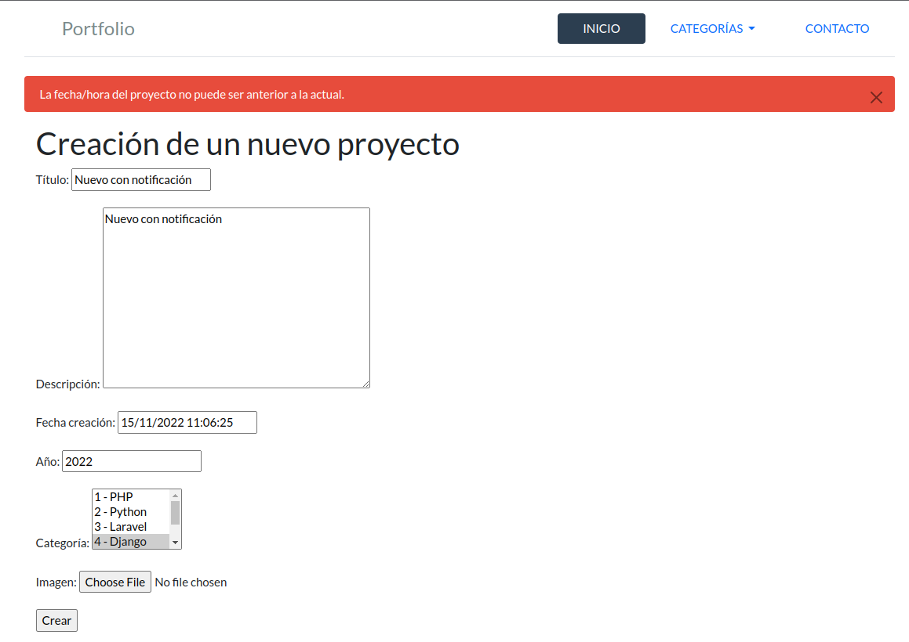
Fenomenal. Vamos a probar el resto de la lógica. Modificamos la fecha y guardamos:
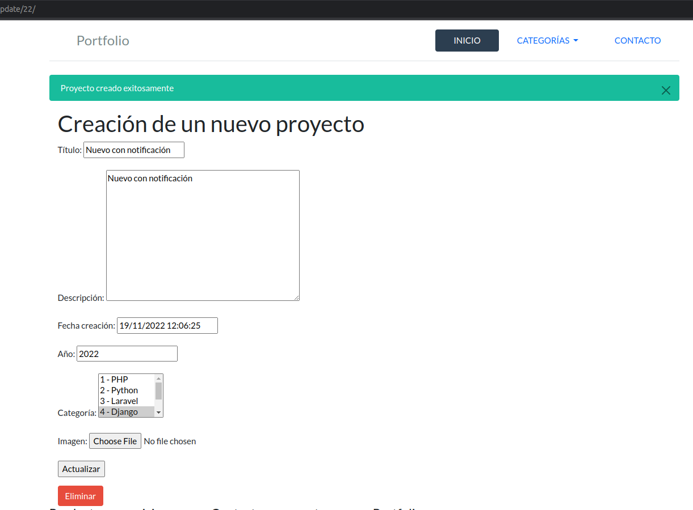
Bien, vamos a ver si se ha creado otro registro de notificación, mediante el administrador:
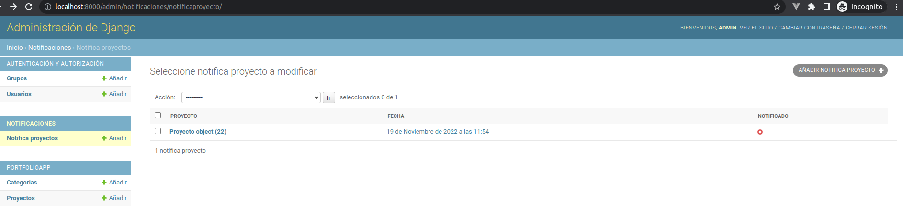
¡Perfecto! Hemos conseguido crear un registro en otra tabla, al tiempo que hemos creado un proyecto. Ahora vamos a tener el siguiente problema: al intentar borrar un proyecto, vamos a obtener un error avisándonos que tenemos registros dependientes en la BBDD. Esto lo trataremos en las actividades.
IMPORTANTÍSIMO: Cabe hacer notar lo siguiente:
- Realmente no hemos sobreescrito el método form_valid, lo hemos extendido. Hemos realizado una serie de operaciones y al final hemos llamado al método form_valid o form_invalid de la superclase. Es decir, solo hemos añadido algunos pasos previos a la lógica heredada. La nomenclatura para llamar al método de la superclase es mediante super.
- Hemos utilizado transacciones de Django para asegurarnos de que la creación del proyecto y su notificación se realiza de forma conjunta, y si se produce algún tipo de error en uno de ellos, que no se realice la transacción en la base de datos.
NOTA: Existe otra aproximación para realizar este tipo de operaciones en Django, que son las señales o signals. Este método supone que se disparen determinadas acciones en la BBDD cuando se detectan determinados eventos. Existen ocasiones en que esto nos permite controlar mucho mejor el momento y las acciones que queremos sincronizar con un determinado evento en el sistema, y no tendríamos que preocuparnos de replicar la misma lógica en todas aquellas partes del código que lo necesitemos. Serían similares a los triggers de bases de datos.
Tags de mensajes¶
Django ha sabido ponerle hasta el color correcto al mensaje de error... ¿o se nos escapa algo? Revisemos la plantilla base.html, vemos que el color viene dado por la parte que dice:
alert-{{message.tags}}
Vamos a verlo en el ejemplo del mensaje de error de la comprobación de fechas:
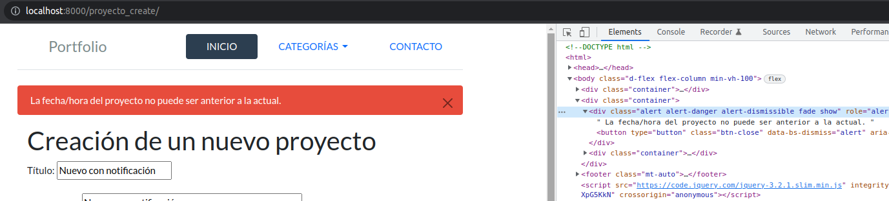
Genial, tenemos la clase alert-danger, que es la que nos da el color rojo.
Bien, la clase bootstrap que le estamos asignando a ese bloque viene dado por el mismo código del mensaje de error. En las alertas de bootstrap vemos que la clase para mensajes de error es "alert-danger".
Pero: en la documentación del framework de mensajes de Django, los códigos son los siguientes:
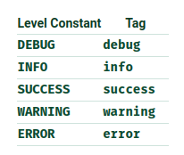
Y según bootstrap, las clases de las alertas que se podrían corresponder con nuestros códigos de mensajes son:
alert-info
alert-success
alert-warning
alert-danger
Vemos que concatenando "alert-" con el código de cada tipo de mensaje en Django podemos conformar la clase adecuada, por eso utilizamos alert-{{message.tags}}.
¿Te has dado ya cuenta de dónde está la discrepancia? Sí: el código de los mensajes de error en Django es "error", no "danger". Con lo cual, ¿cómo puede estar derivando la clase correctamente? Bien, esto es por la modificación que hicimos anteriormente en settings.py:
MESSAGE_TAGS = {messages.ERROR: 'danger'}
Gracias a esto, estamos utilizando "danger" y no "error" (el valor por defecto de Django) como etiqueta de error. Lo podemos comprobar fácilmente: comentamos esa línea en settings.py e intentamos forzar el error:
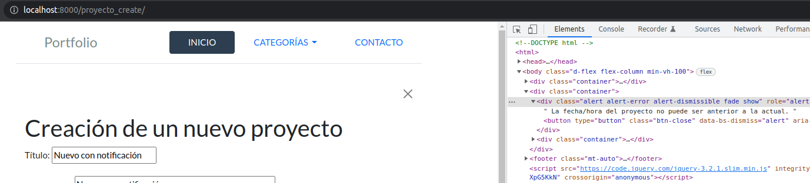
Ahora vemos que ha formado la clase "alert-error". Como esa clase no la reconoce Bootstrap, provoca que el mensaje no se visualice correctamente.
FINALMENTE, descomentamos la línea de MESSAGE_TAGS en settyings.py, para dejar esa modificación.
Formularios¶
Las vistas CreateView y UpdateView han creado automáticamente un formulario basándose en los campos que hemos especificado en el atributo fields, pero el aspecto y distribución de dicho formulario es claramente mejorable.
Los formularios son una pieza clave en la interacción con el usuario, por tanto hay que prestar especial atención a estos elementos en nuestra aplicación. La disposición y agrupación de los campos, las utilidades que ayudan al usuario a decidir los valores introducidos, los mensajes (informativos, de aviso, error, y éxito) y el comportamiento de la aplicación tras el envío de los datos y su procesado, han de estar especialmente analizados y depurados antes de lanzar nuestra aplicación. Conceptos de diseño de interfaces como la usabilidad, están estrechamente relacionados con los formularios.
Django nos proporciona una serie de utilidades para agilizar la creación y configuración de formularios. Principalmente, dispondremos de dos clases que realizarán muchas de las tareas básicas por nosotros:
- Clase Form: Representa la forma más básica de crear un formulario, permitirá tener mayor control. La utilizaremos normalmente para formularios que no gestionen directamente un modelo (operaciones básicas de creación, actualización, eliminación), como por ejemplo el formulario de login, o un simple formulario de contacto que envíe un e-mail (sin manipular datos de la BBDD). Las clases basadas en la clase Form se suelen utilizar en una FormView, de forma que realice el resto de la lógica con los datos recogidos por el formulario.
- Clase ModelForm: Esta clase será la que utilizaremos mayormente, para realizar la gestión de nuestros modelos, y la utilizaremos para construir clases que más tarde utilizaremos en una CreateView, una UpdateView y/o DeleteView.
En este enlace encontrarás ejemplos de utilización de los siguientes pares:
- Clase Form, con clase FormView.
- Clase ModelForm, con CreateView, UpdateView y DeleteView.
En el siguiente subapartado vamos a crear un formulario para el mantenimiento de los proyectos, utilizando la clase ModelForm. En la próxima unidad utilizaremos la clase Form para realizar un formulario para el login de la aplicación.
Gestión de proyectos con ModelForm¶
Creación de la clase ProyectoForm¶
El primer paso va a ser la creación de un fichero forms.py en la app de portfolioapp (típicamente tendremos un fichero forms.py dentro de cada app), e incluimos lo siguiente:
from django import forms
from .models import Proyecto
class ProyectoForm(forms.ModelForm):
class Meta:
model = Proyecto
fields = ['titulo', 'descripcion', 'fecha_creacion', 'year', 'categorias', 'imagen']
Para poder utilizarlo en las vistas, importamos esta clase en views.py. A continuación incluiremos la siguiente línea en las clases ProyectoCreateView y ProyectoUpdateView:
form_class = ProyectoForm
Tras hacer los cambios, consultamos el formulario, y no apreciamos ninguna diferencia:
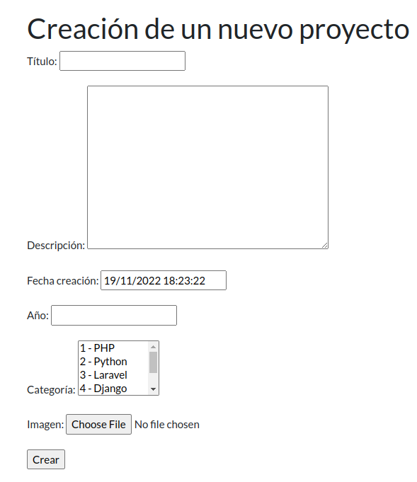
Ahora nos deberíamos preguntar: ¿cómo es posible que en el campo Categoría aparezca un multiselector si no lo hemos especificado en ningún sitio? Django ha decidido utilizar ese "widget" basándose en la definición del modelo. ¿Existen otros tipos de widgets por defecto que podríamos utilizar en nuestros formularios? Sí, tienes una lista completa en este enlace.
Podríamos, además, utilizar widgets de terceros en nuestros formularios, como por ejemplo los desarrollados en esta app llamada django-filter, que nos permiten tener un abanico de selectores más ricos para nuestros formularios.
Layout del formulario¶
Queremos que nuestro formulario tenga una apariencia más atractiva y sea más funcional. Queremos que muestre unos mensajes de error asociados a cada uno de los campos, no los preestablecidos en el navegador.
Podemos establecer varios grados de control sobre el formulario, pero en este apartado vamos a manipular el layout (disposición) de los campos y vamos a establecer un mayor grado de control sobre ellos. De este modo, se ha desarrollado una nueva versión de la plantilla que se adjunta al presente documento, llamada proyecto_form.html. A continuación vemos el resultado:
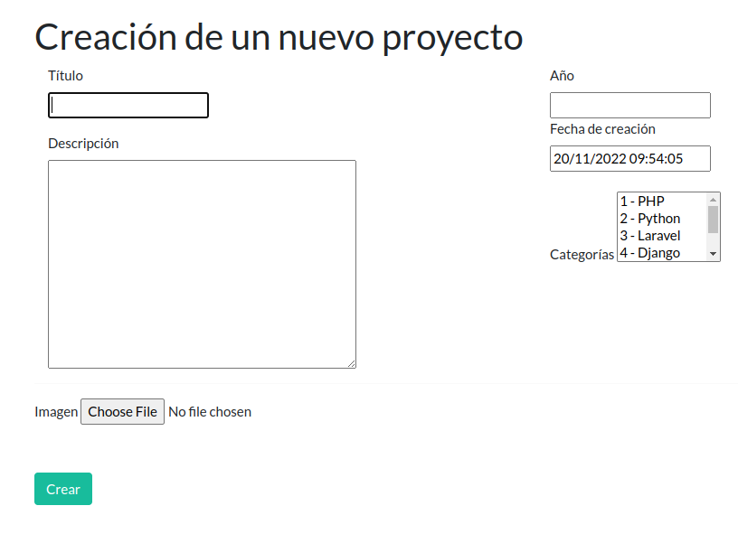
Ha cambiado un poco la disposición de los campos, pero tampoco es gran cosa.
El aspecto es claramente mejorable, ¿cómo podemos conseguir un formulario más adaptado a los actuales estándares de interfaces de usuario? Más abajo en este documento lo llevaremos a cabo mediante un paquete adicional llamado Django Crispy Forms.
Método clean¶
En un apartado anterior implementamos en la vista ProyectoCreateView la restricción de que la fecha de creación no fuese anterior al momento actual. Lo mismo lo podemos hacer como parte del formulario, mediante los métodos clean. Tenemos dos tipos:
- Método clean común a todos los campos: con este método podemos comprobar dependencias entre los campos o tener en cuenta consideraciones adicionales.
- Métodos clean propios de cada campo: se definen como clean_[nombre del atributo], y son específicos para cada campo del formulario.
Vamos a implementar un método clean para el campo fecha_creacion. En el formulario ProyectoForm (a la altura de la clase Meta, no dentro), introducimos lo siguiente:
def clean_fecha_creacion(self):
fecha_creacion = self.cleaned_data['fecha_creacion']
if fecha_creacion < timezone.now():
raise ValidationError("La fecha/hora del proyecto no puede ser anterior a la actual.")
return fecha_creacion
Comprobamos el mensaje de error, que es claramente mejorable estéticamente:
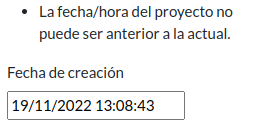
Las validaciones del formulario se dispararán antes que las de la vista, aunque podemos comentar la validación de las vistas para no duplicar código.
Esto lo mejoraremos con Django Crispy Forms.
Podemos realizar esta validación donde más nos interese: si la realizamos en el formulario, cualquier vista que lo utilice conservará esta validación; si la realizamos en las vistas, tendremos que duplicar la lógica o crear un mixin.
Function based views¶
En este documento hemos utilizado CBV en todos los ejemplos, pero podríamos haberlos realizado con FBV. Normalmente utilizar esta segunda aproximación nos da más control sobre lo que estamos haciendo, pero para gran parte de los casos no lo necesitamos. Por lo general, utilizaremos FBV cuando necesitemos algo especializado y concreto, para todo lo demás nos beneficiaremos con todas las funcionalidades que vienen ya implementadas en las clases.
Ahora que hemos revisado el apartado de formularios de Django, podemos acometer las FBV, ya que si utilizamos este método, hemos de definir los formularios previamente (con CBV nos vienen los formularios hechos, si queremos los que vienen por defecto).
A modo ilustrativo, revisaremos este enlace para establecer los paralelismos entre las dos aproximaciones.
Interactividad¶
El desarrollo en lado servidor hace muchísimas cosas por nosotros, representa en la mayoría de las aplicaciones una buena parte del total, pero hay muchísimas más cosas que atender. La interacción con el usuario es otro factor esencial, y funcionalidades desarrolladas en el lado servidor que no son utilizadas de forma efectiva por el usuario (por razones de usabilidad u otras) son funcionalidades que no existen en la práctica. Por tanto, hay que cuidar y mimar especialmente la percepción que el usuario tiene de nuestra aplicación.
Es por ello que la parte servidor se ha de complementar con la parte cliente (entre otras), que ocurre en el navegador web, para el caso de las aplicaciones web.
Existen multitud de tecnologías, librerías, técnicas, que nos permiten ajustar de forma mucho más fina la interacción con el usuario. Con el modelo MVC podemos realizar muchísimas adaptaciones, pero el modelo que nos permite mayor versatilidad es el basado en servicios REST, que nos permite separar por completo la parte servidor y la parte cliente, cediendo a este último todo el protagonismo en la interacción con el usuario.
En los siguientes subapartados vamos a ver unos ejemplos de cómo podemos mejorar el aspecto e interacción de nuestra aplicación con diferentes paquetes y librerías.
En torno a Django se desarrollan multitud de paquetes que pueden facilitar muchas de estas tareas. En este enlace vas a encontrar muchos de ellos. Podemos destacar:
Y muchos más.
Django Crispy Forms¶
Vamos a seguir con el trabajo iniciado en el apartado anterior. Vamos a retomar el formulario que no tenía un aspecto muy usable, y lo vamos a endulzar con Django Crispy Forms. Hemos de instalar 2 paquetes:
Instala los dos paquetes que se nos indica mediante pip (en nuestro entorno virtual), congelamos requirements.txt, y modificamos INSTALLED_APPS en settings.py. Sigue las instrucciones de instalación de los dos enlaces. Además, asegúrate de incluir las siguientes variables en settings.py (para el segundo paquete instalado):
CRISPY_ALLOWED_TEMPLATE_PACKS = "bootstrap5"
CRISPY_TEMPLATE_PACK = "bootstrap5"
Vamos a la plantilla de proyecto_form.html, y revertimos los cambios que habíamos hecho. La dejamos del siguiente modo:
{% extends 'portfolio/base.html' %}
{% load crispy_forms_tags %}
{% block content %}
<div class="container">
<h2>{{object|yesno:'Actualizar proyecto,Creación de un nuevo proyecto'}}</h2>
<form method="post" enctype="multipart/form-data" novalidate>
{% crispy form %}
<input type="submit" class="btn btn-success mr-2" value="{{object|yesno:'Actualizar,Crear'}}" >
{% if object %}
<a class="btn btn-danger" role="button" href="{% url 'proyecto_delete' object.id %}"> Eliminar </a>
{% endif %}
</form>
</div>
{% endblock %}
Vamos a hacer magia con Django Crispy Forms y añadimos la siguiente línea tras el extends:
{% load crispy_forms_tags %}
{% crispy form %}
Comprobamos ahora el formulario y vemos una clarísima mejora:
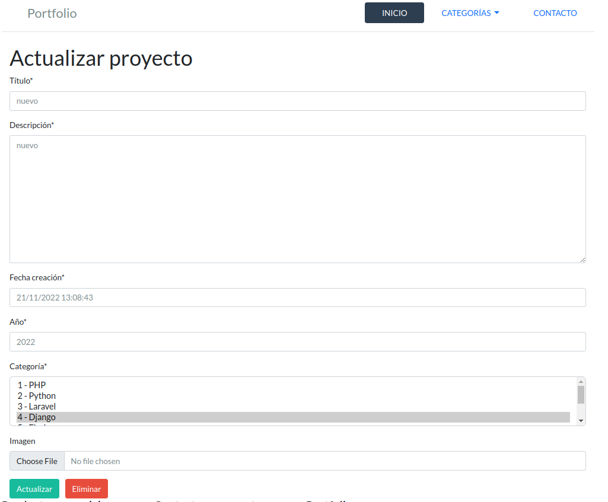
Antes de continuar, vamos a ver qué nos ofrece este paquete para cambiar nuestro formulario. En la documentación se detallan dos clases:
- FormHelper: define el comportamiento en la representación del formulario.
- Layout: como su propio nombre indica, define la estructura de los elementos del formulario.
Primero vamos a introducir el siguiente código en la clase ProyectoForm:
def __init__(self, *args, **kwargs):
super(ProyectoForm, self).__init__(*args, **kwargs)
self.helper = FormHelper(self)
self.helper.form_tag = False # No incluir <form></form>
self.helper.layout = Layout(
Div(
Field('titulo'),
Field('descripcion'),
),
HTML('<hr>'),
Div(
Div(Field('fecha_creacion'), css_class="col-6"),
Div(Field('year'), css_class="col-6"),
css_class="row"
),
HTML('<hr>'),
Div(
Field('categorias', css_class="mb-3"),
Field('imagen'),
css_class="mb-5"
),
)
Observaciones:
- Se extiende el constructor de la clase ProyectoForm para acomodar los cambios con Crispy Forms.
- Se establece el atributo form_tag del helper a False para que no se incluya el elemento
- Utilizamos elementos como Layout, Div, HTML para estructurar los elementos, y les damos estilo con el atributo css_class.
De esta forma podríamos modificar la estructura del formulario de forma dinámica, mediante Python.
Vamos a ver cómo ha quedado el formulario:
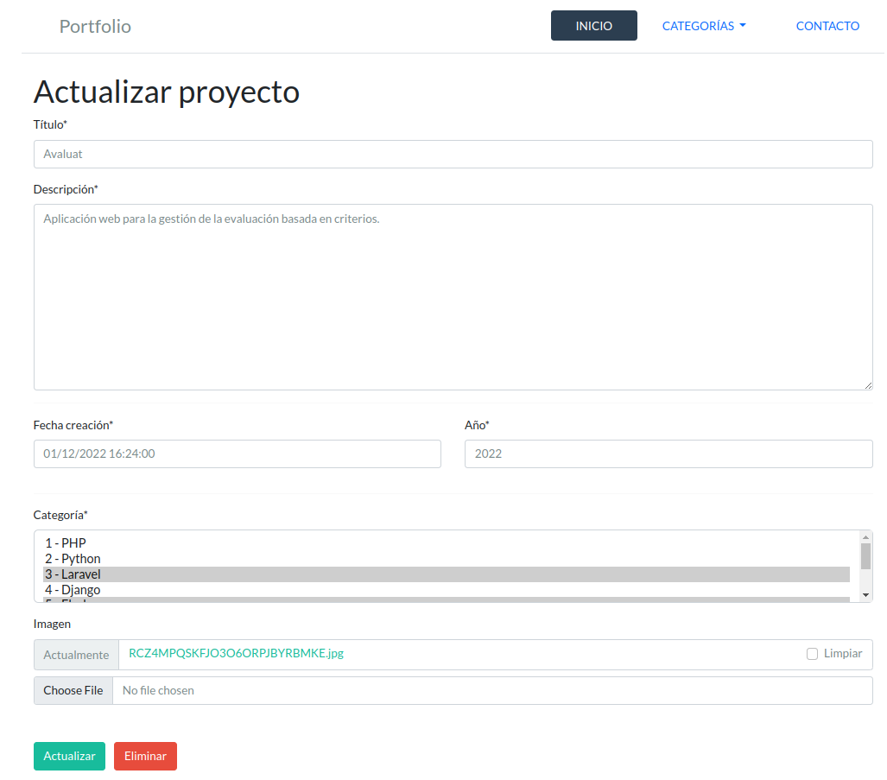